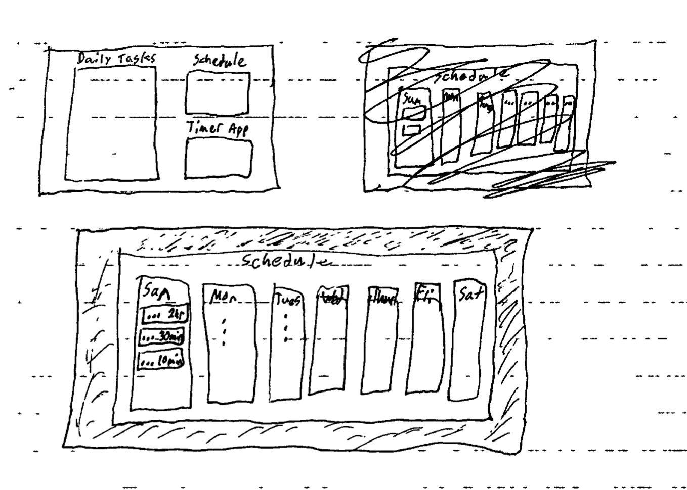
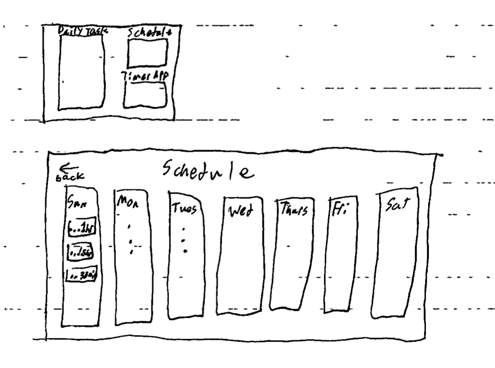
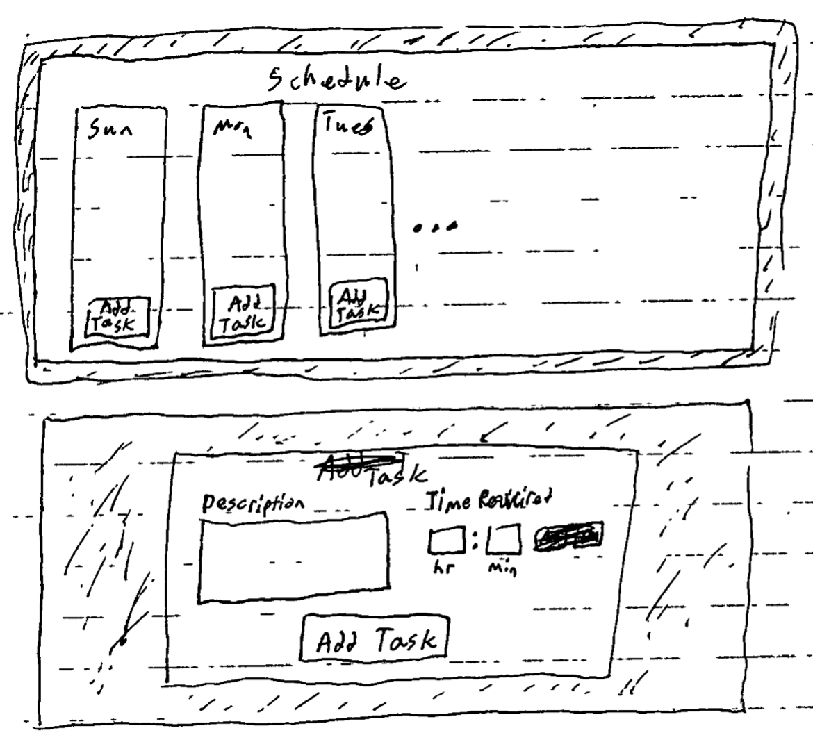
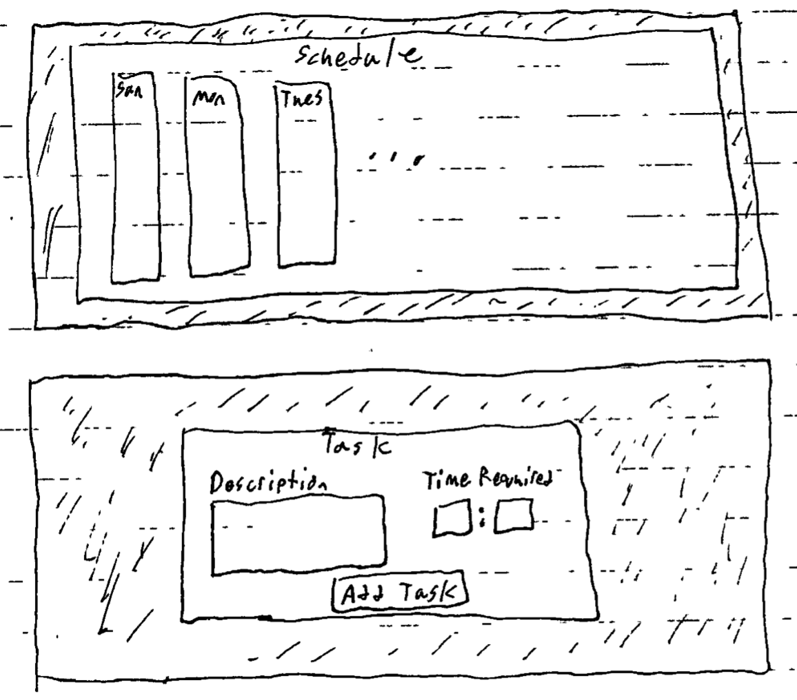
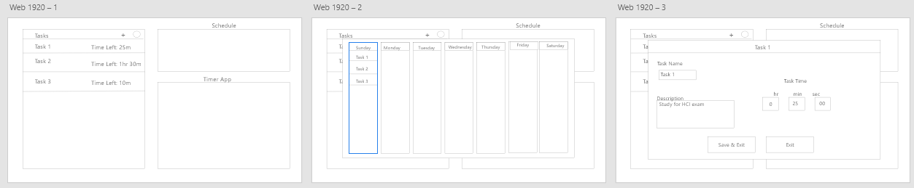
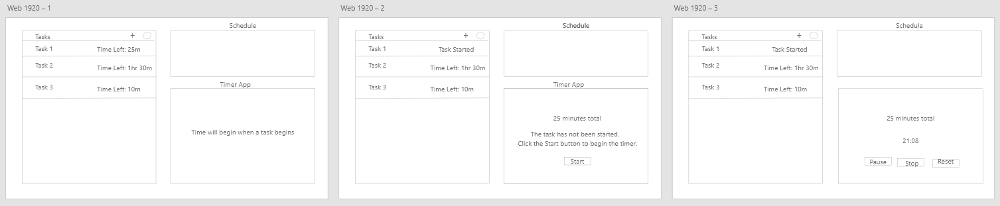

Module 3
HomeGoogle LLC
Authors: Henry Faulkner, Danny Kim, Kamiru Ndiragu, Matthew Hanagriff
1. User Stories.
User Story 1: As a user, I want to be able to access a portal that lets me look at my schedule for the week ahead that allows me to schedule any tasks I may have to do, so that I can keep them in mind and be productive when those time slots occur. User Story 2: As a user, I want to be able to add a task and assign designated time for the task in my agenda, so that I can create a schedule for my productivity. User Story 3: As a user, I want to be able to edit an existing task in my schedule User Story 4: As a user, I want to be able to begin a task, which will start a Pomodoro timer and a timer counting down from that task's designated time, so that I can designate an amount of time to stay focused for. User Story 5: As a user, I want to be able to change the amount of time allotted for breaks and studying that the app assigns (defaults to Pomodoro method), so that I can adjust these times to better suit my needs or preferences. User Story 6: As a user, I want to be able to quickly access a checklist which shows which tasks are done and which tasks need to be done, so that I can keep track of the amount of tasks I have and haven't completed.
2. Most Relavent User Stories.
The user stories most relevant to our group's proposed solution are all of the ones we've mentioned in section A. We believe this to be the case because these user stories establish the framework of our app, and the basic functionalities, design philosophies, and interactions that the user will be able to accomplish.
1. User Story Alternatives.
Description: As a user, I want to be able to access a portal that lets me look at my schedule for the week ahead that allows me to schedule any tasks I may have to do, so that I can keep them in mind and be productive when those time slots occur.
Alternative 1: click on minimized schedule -> expands schedule into modal view with home page ui faded in the back
Justify: Keeps the user within a single landing page. Simplify navigation.

Alternative 2: click on minimized schedule -> opens schedule page for viewing
Justify: Separates in-depth feature into a separate page from landing page. More layered approach.

Description: As a user, I want to be able to add a task and assign designated time for the task in my agenda, so that I can create a schedule for my productivity.
Alternative 1: click on minimized schedule -> expands schedule into modal view with home page ui faded in the back (week schedule; each day is a vertical list of events) -> click "Add Task" button beneath the list for the specified day -> Task modal will pop up -> fill in form with accurate description and time allocation -> click "Add Task" button
Justify: Clearly labels where to click to add a new task to a day.

Alternative 2: click on minimized schedule -> opens schedule page for viewing (week schedule; each day is a vertical list of events, of fixed size, with border) -> click within border of specified day -> Task modal will pop up -> fill in form with accurate description and time allocation -> click "Add Task" button
Justify: Gives the user more freedom where to click to add a task. Requires the user to have some understanding of similar interfaces.

Description: As a user, I want to be able to edit an existing task in my schedule, so that I can alter my agenda according to my time or priorities.
Alternative 1: click on minimized schedule -> expands schedule into modal view with home page ui faded in the back (week schedule; each day is a vertical list of events) -> click on the to-be edited task -> opens task modal with form filled with current contents -> edit fields with desired content -> click "Add Task" button
Justify: Allows users to alter their tasks and gives them more control over the app's functionality.
Download Link to Adobe XD File: UseCase3_Alt1

Alternative 2: click on minimized schedule -> expands schedule into modal view with home page ui faded in the back (week schedule; each day is a vertical list of events) -> click on "Edit" button to right of the to-be edited task -> opens task modal with form filled with current contents -> edit fields with desired content -> click "Add Task" button
Justify: A more layered approach that also gives users control over how to manage the contents of their tasks.
Download Link to Adobe XD File: UseCase3_Alt2

Description: As a user, I want to be able to begin a task, which will start a Pomodoro timer and a timer counting down from that task’s designated time, so that I can designate an amount of time to stay focused for.
Alternative 1: Currently, the plan for the Pomodoro timer is that it will count down without any way to pause. An alternative would be to add some sort of pause or stop button.
Justify: Gives the user more control over the timer.
Download Link to Adobe XD File: UseCase4_Alt1

Alternative 2: Instead of the task automatically beginning a Pomodoro timer, the user can choose to manually begin the Pomodoro timer by clicking a button (this option can be changed in the settings of the application).
Justify: Gives the user more control over when to begin their tasks.
Download Link to Adobe XD File: UseCase4_Alt2
